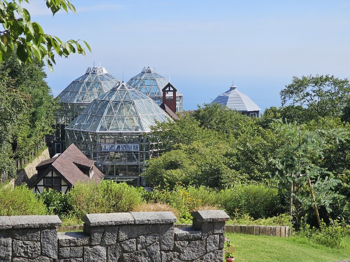
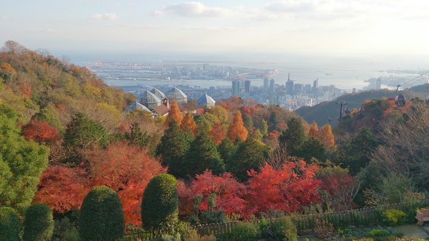
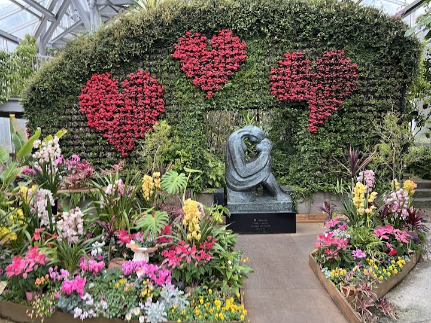
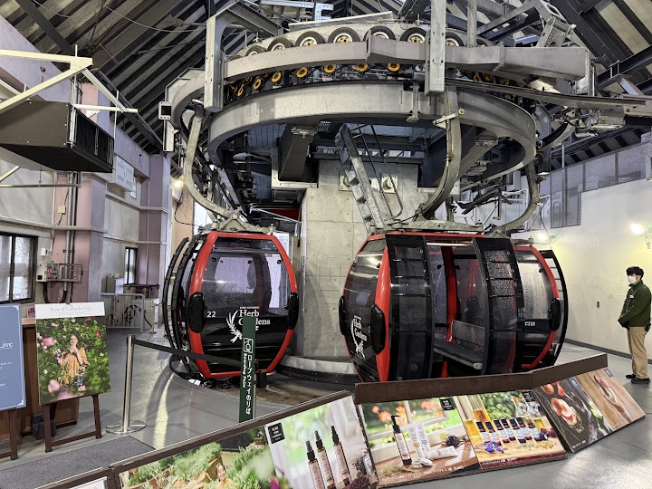
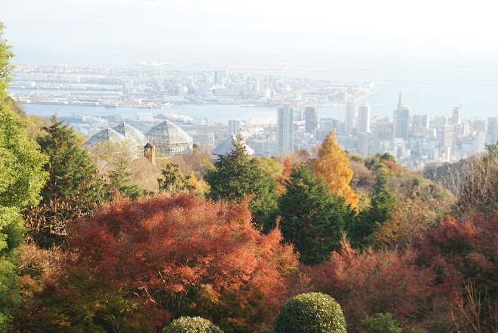

Nunobiki Herb Gardens and Ropeway (suggested)
Nunobiki Herb Gardens is a big hillside botanical garden above Kobe with themed areas of flowers and herbs, restaurants and a gift shop, reached by a ropeway from Shin-Kobe Station with views of the city and port.
Open in Google Maps (street view, more photos and reviews there)






Visitor tips on finding it and getting there
The Nunobiki Herb Gardens are much more than just a botanical garden. While the beautifully maintained flowers and herb collections are certainly the main attraction, the entire complex offers a full day of sightseeing, scenic viewpoints, dining, and leisurely walks that make it one of Kobe's most rewarding destinations. One of the highlights is the Ropeway, which takes visitors all the way to the summit. Although it's possible to hike up, the climb is entirely uphill and can easily take an hour or more—longer if you stop to rest along the way. The ropeway isn't cheap, but it's well worth th
Very nice little getaway from the city! We travelled from Osaka for a day trip which was about 60 minutes by train, then another 25 minutes walk from the station to the ropeway, but a very casual easy walk. The ropeway itself was really nice and through some nice green gardens. The view from the ride up the hill is really nice and overlooks the ports. We did the walk down the hill and stopped at the top for a drink and again at the greenhouse part way down. Amazing views of Kobe and some really nice icecreams. The gardens themselves are very well maintained and nice to stroll through. If you'r